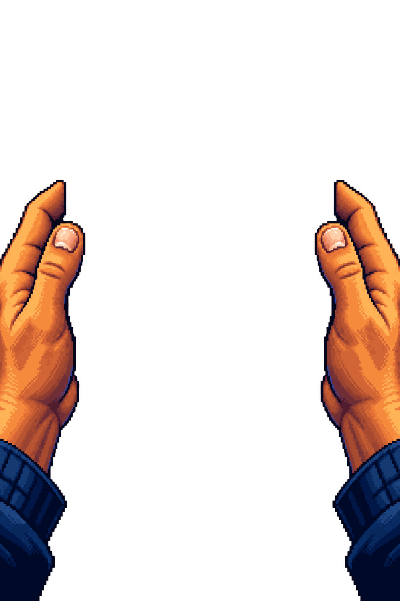

393 × 852 points | iPhone standard


●●● 4G
Go forward in time?
MATCH
BLOCKEDThis contact has blocked you


SOMETHING IS AT THE DOOR
Heavy breathing. Claws against the frame. Decide quickly.


The same artwork is exported in six native pixel-size variants, with one HTML layout that adapts without redrawing the phone.